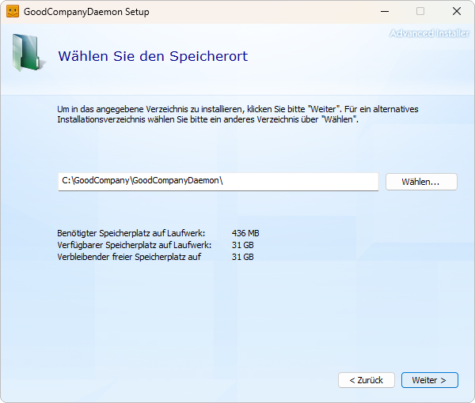
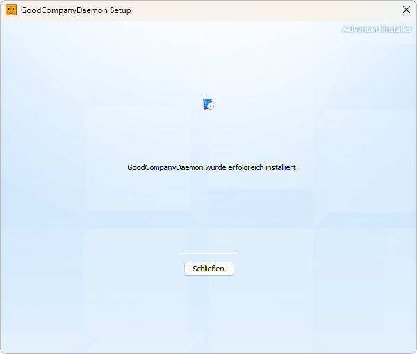
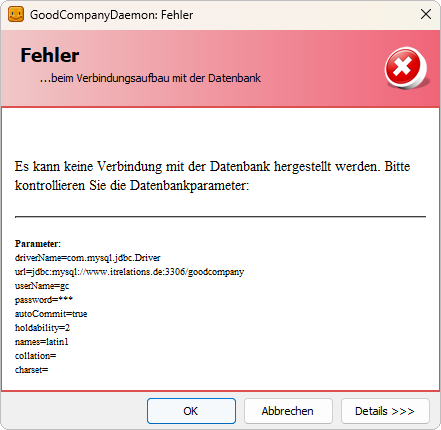
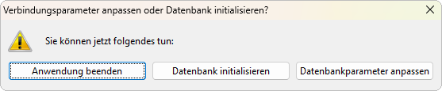
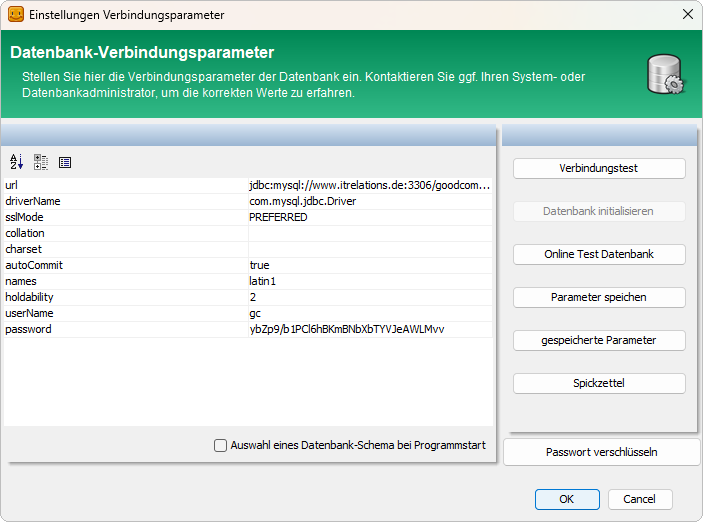
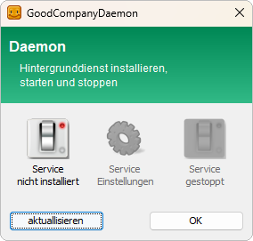
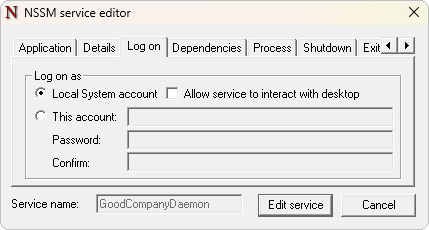
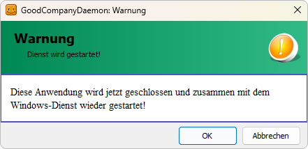
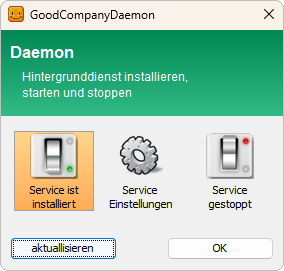

GoodCompanyDaemon installieren
Den GoodCompanyDaemon auf einem Windows-Rechner installieren, mit der Datenbank verbinden und als Windows-Dienst einrichten. Danach folgt die Konfiguration der Importe in ITR Partner Service → Produkte → GoodCompanyDaemon → In Betrieb nehmen.
Voraussetzungen
- Windows-Rechner, der die Datenbank und die Import- und Exportverzeichnisse erreicht
- Administratorrechte auf dem Rechner
- Installationspaket
Setup-GoodCompanyDaemon-<Version>_…_64bit.exe - Betrieb mit CentralPoint: Der Daemon arbeitet mit der CentralPoint-Datenbank. An einer Standalone-Kasse lässt er sich nicht betreiben.
- Zugangsdaten zur CentralPoint-Datenbank: Server, Port, Datenbankname, Benutzer, Passwort
- Lizenz für den GoodCompanyDaemon, im Partner-Portal erworben. Der CentralPoint prüft die Lizenz und schreibt sie in die Datenbank; der Daemon prüft sie beim Start in der Datenbank.
So gehen Sie vor
1. Setup ausführen
- Starten Sie das Installationspaket mit Administratorrechten.
- Bestätigen Sie den Willkommensdialog mit Weiter.
- Übernehmen Sie das Standardverzeichnis
C:\GoodCompany\GoodCompanyDaemon\und klicken Sie auf Weiter.

- Klicken Sie auf Installieren.
- Schließen Sie den Assistenten nach der Meldung GoodCompanyDaemon wurde erfolgreich installiert mit Schließen.

Das Setup legt im Startmenü den Eintrag GoodCompanyDaemon an. Ein Windows-Dienst wird noch nicht eingerichtet — das geschieht in Schritt 3.
2. Datenbankverbindung einrichten
- Starten Sie GoodCompanyDaemon über das Startmenü.
- Beim ersten Start sind Vorgabewerte hinterlegt, die Verbindung schlägt deshalb fehl. Bestätigen Sie die Meldung Es kann keine Verbindung mit der Datenbank hergestellt werden mit OK.

- Wählen Sie Datenbankparameter anpassen.

- Tragen Sie die Verbindungsdaten ein:
| Feld | Inhalt | Vorgabe |
|---|---|---|
url |
jdbc:mysql://<Server>:<Port>/<Datenbank> |
jdbc:mysql://www.itrelations.de:3306/goodcompany |
userName |
Datenbankbenutzer | gc |
password |
Passwort des Datenbankbenutzers | – |
driverName |
Datenbanktreiber | com.mysql.jdbc.Driver |
sslMode |
Verschlüsselung der Verbindung | PREFERRED |
names |
Zeichensatz der Verbindung | latin1 |
Die übrigen Felder (collation, charset, autoCommit, holdability) bleiben auf der Vorgabe. Spickzettel zeigt Beispielwerte für MySQL und PostgreSQL.

- Klicken Sie auf Verbindungstest.
- Ist der Test erfolgreich, klicken Sie auf OK. Der Daemon startet und zeigt das Hauptfenster.
Mit Cancel wird der Daemon beendet, ohne die Parameter zu übernehmen. Beim nächsten Start erscheint wieder der Verbindungsfehler.
Später lassen sich die Verbindungsdaten im Hauptfenster über Datenbank ändern.
3. Als Windows-Dienst einrichten
Damit der Daemon ohne angemeldeten Benutzer und nach einem Neustart automatisch läuft, wird er als Dienst eingerichtet.
- Klicken Sie im Hauptfenster auf Windows-Service.
- Klicken Sie auf Service nicht installiert. Der Dienst
GoodCompanyDaemonwird mit Starttyp Automatisch angelegt und läuft unter dem lokalen Systemkonto.

- Liegen Import- oder Exportverzeichnisse auf einem Netzlaufwerk, braucht der Dienst ein Benutzerkonto mit Zugriff darauf: Klicken Sie auf Service Einstellungen, wählen Sie im Reiter Log on die Option This account, tragen Sie Konto und Passwort ein und bestätigen Sie mit Edit service.

- Klicken Sie auf Service gestoppt, um den Dienst zu starten.
- Bestätigen Sie die Meldung mit OK. Die Anwendung wird geschlossen und zusammen mit dem Dienst neu gestartet.

Unter dem lokalen Systemkonto stehen verbundene Netzlaufwerke (Laufwerksbuchstaben) nicht zur Verfügung. Liegen Import- oder Exportverzeichnisse dort, werden die Dateien weder gelesen noch geschrieben. Verwenden Sie in diesem Fall ein Benutzerkonto mit Zugriff und UNC-Pfade.
Ergebnis prüfen
- Öffnen Sie im Hauptfenster Windows-Service: angezeigt wird Service ist installiert, der Dienst läuft.

- In der Windows-Diensteverwaltung steht der Dienst
GoodCompanyDaemonauf Wird ausgeführt, Starttyp Automatisch. - Informationen zeigt die installierte Version.
- Im Protokoll steht der Verbindungsaufbau zur Datenbank ohne Fehlermeldung.
Wenn es nicht funktioniert
- Verbindungsfehler bei jedem Start:
url, Benutzer und Passwort prüfen; mit Verbindungstest gegenprüfen, ob Server und Port vom Rechner aus erreichbar sind. - Dienst startet nicht oder findet keine Dateien: Dienstkonto prüfen — siehe Schritt 3.
- Ursache unklar: Protokolldateien auswerten, siehe unten.
Protokolldateien
| Pfad | Inhalt |
|---|---|
C:\GoodCompany\GoodCompanyDaemon\logs\goodcompany_*.log |
Protokoll der Anwendung, u. a. Verbindungsaufbau zur Datenbank |
C:\GoodCompany\GoodCompanyDaemon\logs\service\goodcompanydaemon_*.log |
Protokoll des Dienstes |
Neuinstallation
Die Deinstallation über Windows entfernt die Programmdateien, nicht aber die Ordner config, importconfig, logs und cm sowie den Dienst-Eintrag. Für eine saubere Neuinstallation:
- Ordner
configundimportconfigsichern — darin liegen Verbindungsdaten und Importeinstellungen. - Dienst
GoodCompanyDaemonstoppen und den Daemon deinstallieren. - Den verbliebenen Dienst-Eintrag in einer Eingabeaufforderung mit Administratorrechten entfernen:
sc delete GoodCompanyDaemon
- Den Ordner
C:\GoodCompany\GoodCompanyDaemon\umbenennen oder entfernen. - Neu installieren wie oben beschrieben. Um die alte Konfiguration weiterzuverwenden, den gesicherten Ordner
configvor dem ersten Start nachC:\GoodCompany\GoodCompanyDaemon\config\kopieren — dann entfällt Schritt 2.
Weitere Informationen
- ITR Partner Service → Produkte → GoodCompanyDaemon → Funktionsweise
- ITR Partner Service → Produkte → GoodCompanyDaemon → In Betrieb nehmen